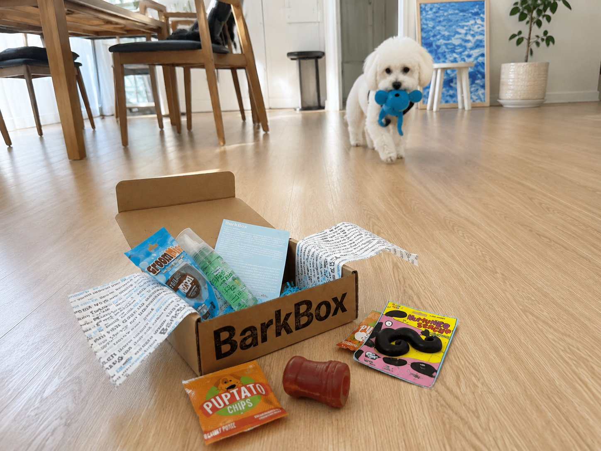
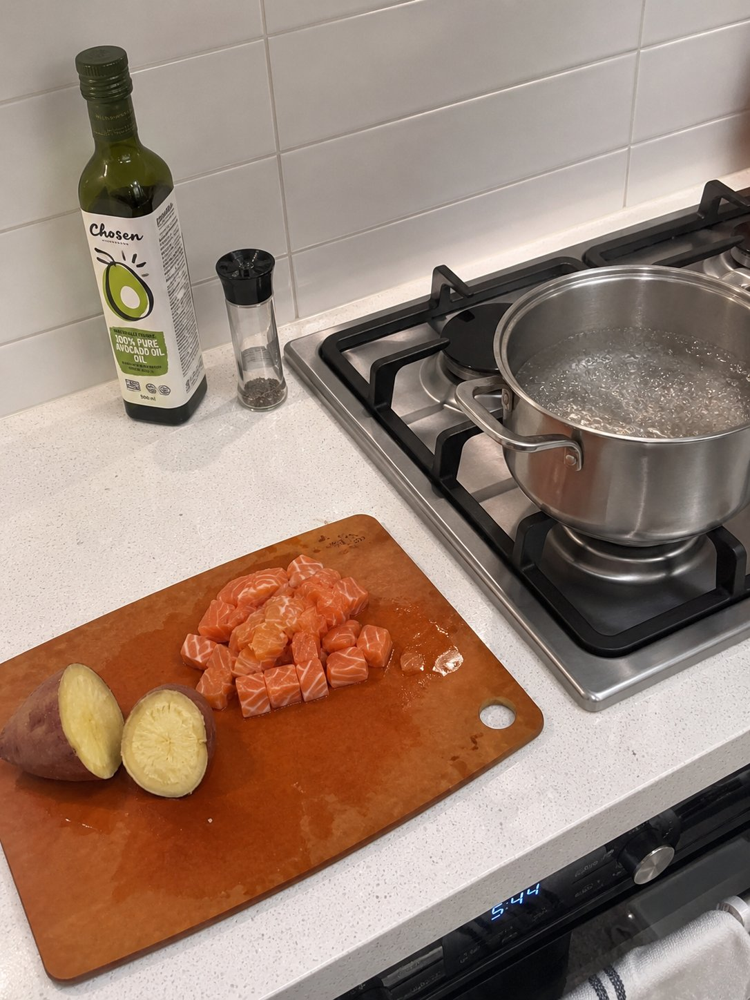
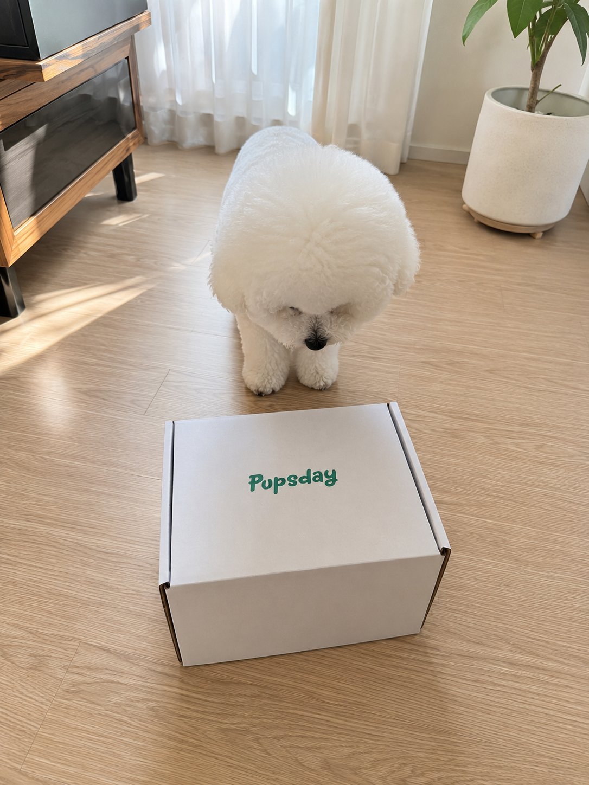
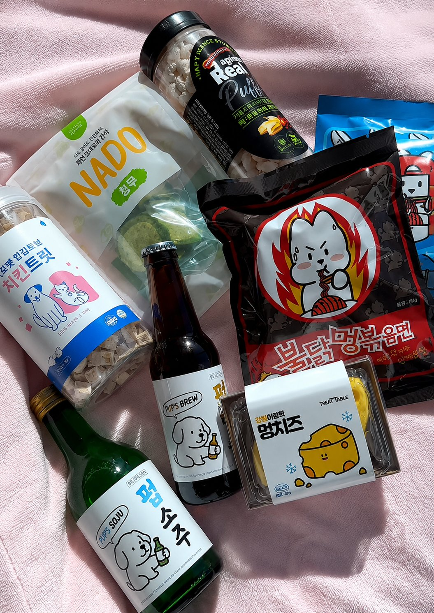
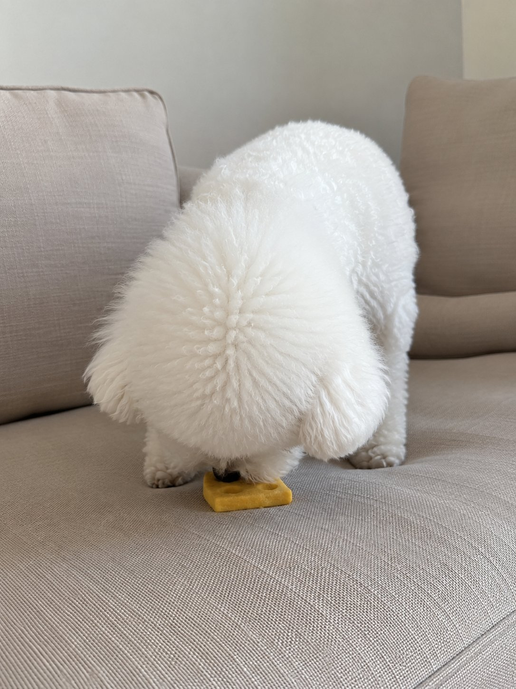
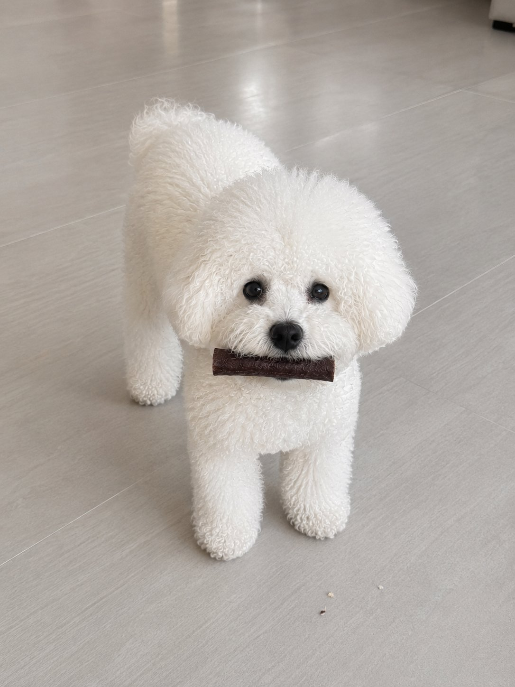

You've probably heard of Buldak. It's one of my all-time favorites. Whenever I'm stressed or just craving something with a kick, that's the first thing I reach for.
Korean food isn't just food to me. It's my halmoni's kitchen in Seoul. It's what I crave when I'm homesick, or just need something that feels like home. I never thought I could share any of that with my dog — until I found Pupsday.
This is my honest review after 6 months of subscribing. The good, the real, and some things I wish they would change.
A little about myself.
I'm a second-generation Korean-American living in Fort Lee, NJ. I grew up with rice on the table every morning, kimchi in the fridge at all times. I still fly back to Seoul at least once a year to see my family. Korean food isn't something I discovered. It's just always been there, in my life.
Korean food taught me one thing: real ingredients, real care, nothing unnecessary. You feel the difference when it's done right.
That standard stuck with me. So when Cloud came into my life, it was never a question of whether I'd apply it to her food too. I've boiled chicken breast at 11pm because I didn't trust the bag of treats I bought at the pet store. I've steamed sweet potatoes, boiled salmon, and googled "can dogs eat seaweed" more times than I can count.
Cloud has been my best friend for four years now, and she has convinced me she understands more Korean than most people give her credit for. And she deserves the same care I put into everything else.
So when I say I found something I actually trust, that means something.
- 01Ingredients — what's actually in it, and what isn't
- 02Cloud's reaction — she's the real judge
- 03Cultural connection — does it actually feel Korean, or just marketing
- 04Value — is $34.90 a month worth it
My first subscription box experience.

My introduction to dog subscription boxes was BarkBox.
A friend recommended it, I signed up, and the first box showed up at my door two weeks later. Honestly, it was fun. The themes were creative, the packaging was nice, and Cloud got excited when I opened it. For someone who had never tried a subscription box before, it was a good starting point.
But here's the thing about Cloud. She has never really cared too much for toys. The plush toys that came in every BarkBox got a look or two, maybe a quick sniff, and were never touched again. What she went straight for, every single time, were the treats. Eventually, she stopped acknowledging the toys altogether.
And unlike treats, toys don't disappear. They pile up. Month after month, a new plush animal joins the corner of my living room that Cloud has never looked at twice. At some point you realize you're not buying a treat subscription. You're paying to accumulate things you'll eventually have to get rid of.
So I started paying closer attention to what was actually in those treat bags. The ingredient lists were longer than I expected. Sodium nitrite. Propylene glycol. Artificial flavors listed as just "natural and artificial flavoring." For someone who was boiling chicken breast for her dog on a Tuesday night, that didn't sit right.
That's when I started looking for something else.
So I went back to doing it myself.

Boiled chicken breast. Steamed sweet potato. The occasional piece of boiled salmon. Cloud loved it, and I knew exactly what was going into her body. No ingredient lists to decode, no additives to google. Just genuine, clean food.
But it wasn't sustainable. Prepping fresh food for a dog on top of everything else takes time I didn't always have. And as much as Cloud loved what I was making, it was always the same rotation. Chicken. Sweet potato. Salmon. Repeat.
That's when I started thinking about it differently. I was eating Buldak for dinner and Cloud was sitting next to me, eyeing my bowl. And I thought, she deserves something more interesting than boiled chicken again. Something with a little more story and flavor to it.
I wanted treats that had the same care I was putting in myself, but with flavors that actually meant something to me. Korean flavors. The ones I grew up with. I started looking, and that's when I found Pupsday.
A Korean dog treat subscription box.

Monthly themes inspired by Korean food culture. Buldak. Ramyun. Soju and Snacks. The same foods that have been part of my life for as long as I can remember, turned into treats for my dog.
I was skeptical at first. "Korean-inspired" can mean a lot of things. It can mean a cute package with a Korean flag on it and ingredients that have nothing to do with Korea. So I dug in.
The founders are Korean-Americans based in Brooklyn, with a sourcing partner in Seoul who walks into the same shops their parents used to go to. Every treat is human-tested by the founder before it goes into a box — HACCP certified, no artificial additives or preservatives, made in Korea.
The numbers spoke for themselves.
For a brand this niche, this means something. That was enough for me to try the first box.
When it arrived, Cloud knew before I even opened it. She was at the door, then at my feet, then sitting with the kind of focused attention she reserves for when I'm eating something she wants. I opened the box and she lost it.
Here's what I actually think.

The box comes once a month, four treats each built around a Korean theme. Every month feels like something to look forward to — for both of us.
The ingredients are what keep me subscribed. I've read every label. Short ingredient lists, things I actually recognize. It's the same standard I hold my own food to.
But the real test is Cloud.
The first time I opened a box with Meong Cheese in it, Cloud was in the other room. By the time I had the bag open she was already sitting directly in front of me, completely still, eyes locked on my hands. I gave her one piece and she was done with it in seconds. Then she looked up and waited again. That's never happened with anything from a pet store shelf.
Orae Chew is the other one. She hears the crinkle of the bag from anywhere in my apartment. I've tested this. She comes running every time.


It's the closest thing I've found to actually sharing something I love with her.
$34.90 a month. Is it worth it?
It's a fair question. There are cheaper subscription boxes out there. Pet Treater starts at $15 a month. BarkBox runs $35 a month. On paper, Pupsday sits right there with the pricier options in the category. Though if you commit to six months, it drops to $28.32 a box, which changes the math a little.
So let me just show you what's in the box.
The one I have right now has Buldak-inspired ramyun chews, freeze-dried chicken bites, seaweed crisps, and Meong Cheese. Four treats, each built around the month's Korean theme, all made in Korea with ingredient lists I can actually read.
Before Pupsday, I was buying individual premium treats at a specialty pet store — $12 to $18 a bag, and I was still second-guessing half the ingredients. Four quality Korean treats, curated and delivered, for $34.90. For me, it never felt like I was overpaying.
A couple of things worth knowing.
It might not be for everyone.
If you didn't grow up with Korean food, or Korean culture isn't something you're connected to, the themes and flavors might not land the same way. The box names, the ingredients, the whole experience — it's built around a very specific cultural context. That's not a flaw. That's the point. But it does mean this isn't a box for everyone, and I'd rather say that upfront than have you find out after your first shipment.
You don't get to choose what comes in the box.
Every month is a surprise. That's part of the appeal — but it also means that on months when Meong Cheese and Orae Chew aren't in there, Cloud notices. She still eats everything. She still gets excited when the box arrives. But some months are just better than others, and that's entirely out of my control.
I'd love to see more variety added over time, and more options for regulars to customize at least part of their box.